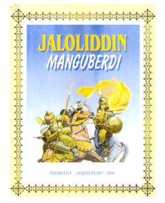

JMBuyuk sarkarda Jaloliddin Manguberdining hayoti va vatanparvarlik kurashlari haqida hikoya qiluvchi tarixiy-badiiy kitob.
Mazkur kitobda turonlik buyuk sarkarda Jaloliddin Manguberdining hayot yo'li va Vatan ozodligi yo'lidagi mardona kurashlari qiziqarli badiiy lavhalarda hikoya qilinadi. Asar tarixiy haqiqatlarga asoslangan bo'lib, yosh avlodda vatanparvarlik tuyg'ularini shakllantirishga xizmat qiladi.